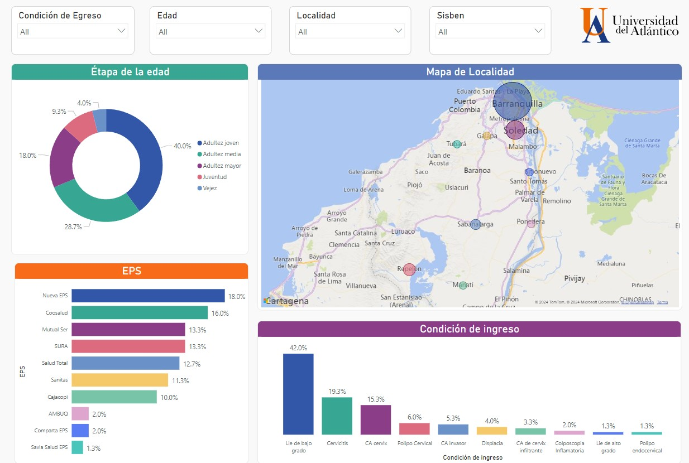
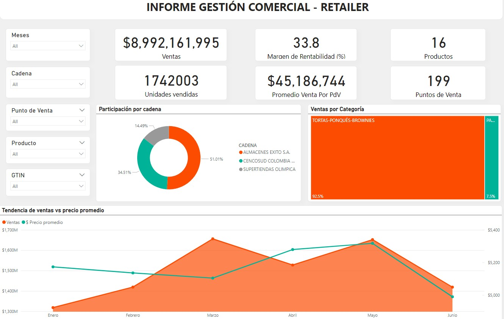
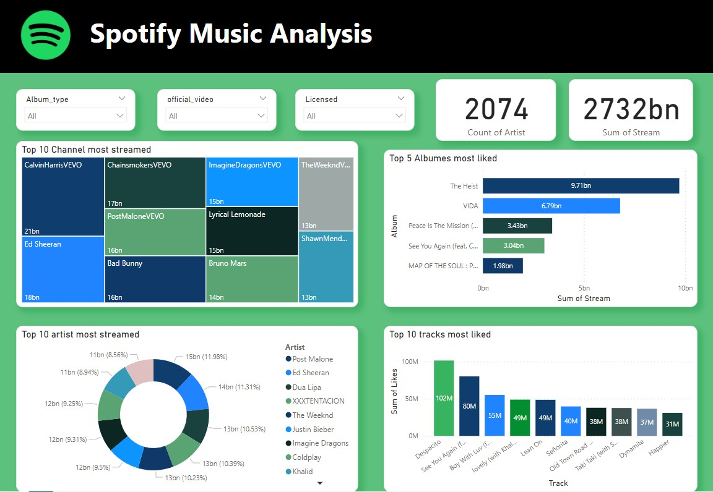
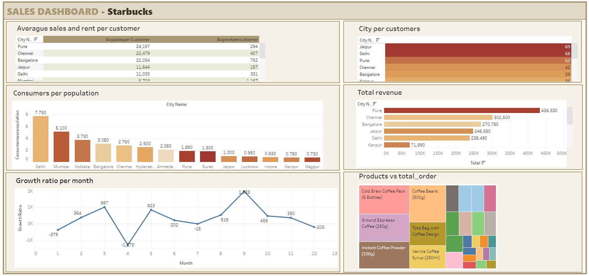
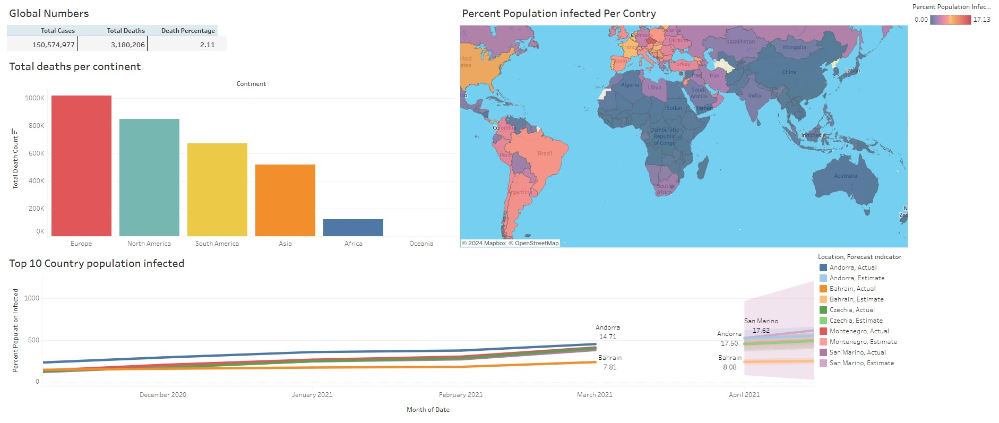

SALES, INVENTORY AND OSS
DASHBOARD FOR RETAILER

In this project features a Power BI dashboard providing insights inot trends and detailed DAX calculation.
SPOTIFY DATA EXPLORATION
WITH SQL AND POWER BI

In this project involves exploring Spotify data using SQL and a Power Bi dashboard to visualize listening trends.
STARBUCKS ANALYSIS
WITH SQL AND TABLEAU

In this project involves exploring Starbucks data using SQL complemented by an interactive Tableau dashboard.
COVID-19 ANALYSIS
WITH SQL AND TABLEAU

This project analyzes COVID-19 data using SQL for data extraction and features a Tableau dashboard that visualizes statistics related to the pandemic.